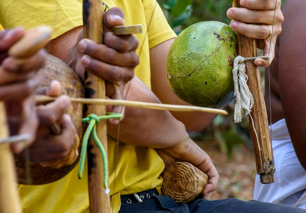
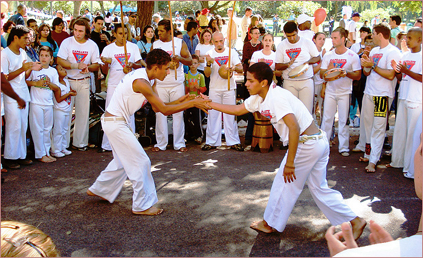
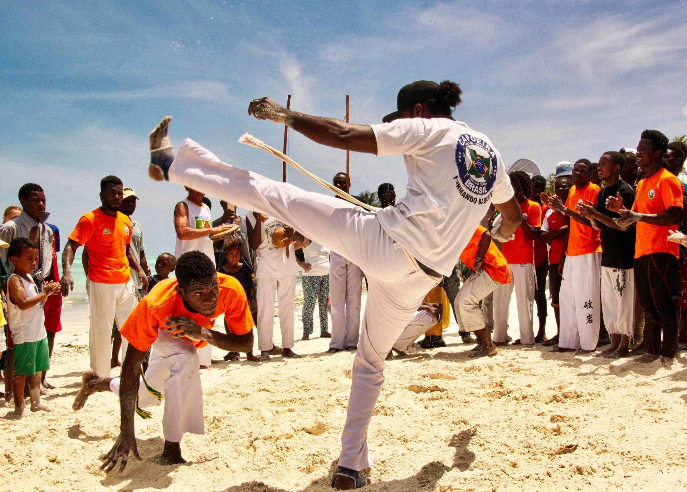
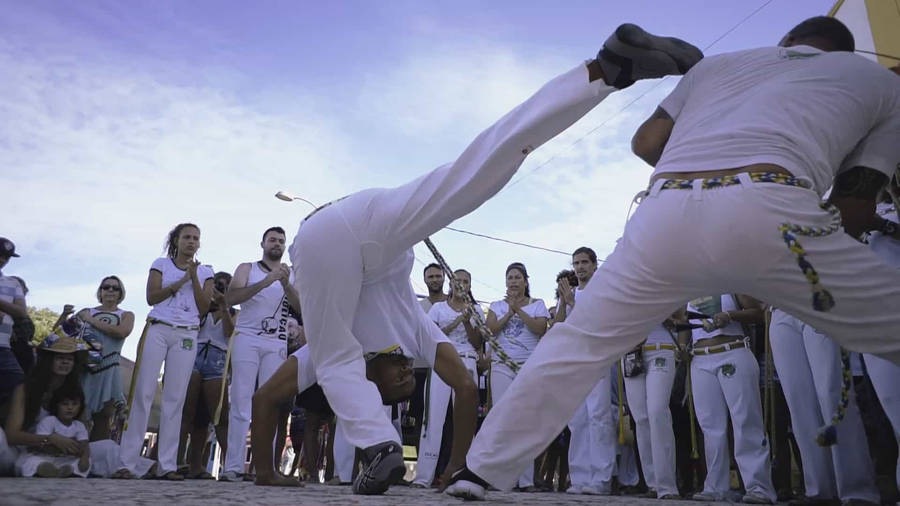
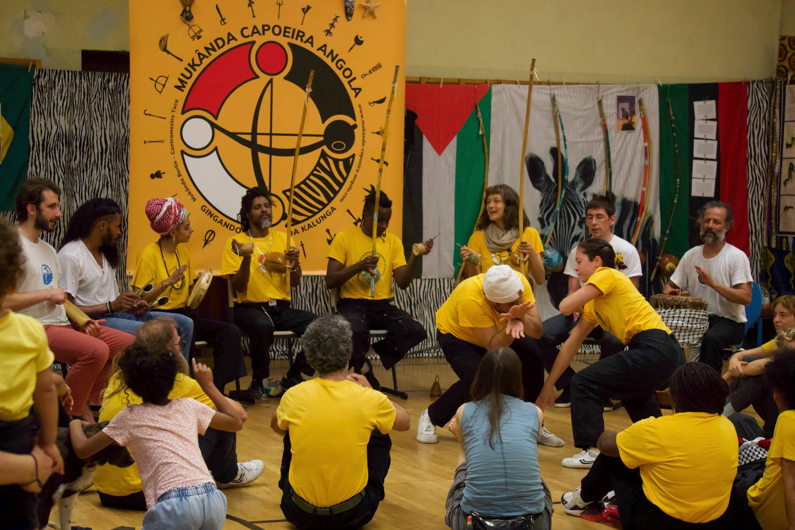

Dança da
malandragem
La Capoeira
La Capoeira es una manifestación cultural afro-brasileña que tiene diversas facetas, como danza, música, acrobacias y expresión corporal. Fue creada en Brasil por los esclavos africanos traídos por los portugueses. Es conocida por sus rápidos y complejos movimientos, que utilizan los brazos y las piernas para ejecutar maniobras de gran agilidad en forma de patadas, fintas y derribos, entre otros. La capoeira como arte marcial incorpora movimientos bajos, derribos, barridos, golpes de mano abierta, de puño, con los codos y las rodillas, con la cabeza e incluso el manejo de armas tradicionales; mientras que en el ámbito artístico y deportivo se hace más énfasis en las acrobacias y las demostraciones ritualizadas de habilidad. Su práctica se desarrolla con música tradicional de tambores, el berimbau (instrumento musical en forma de arco, procedente del hungu tradicional angoleño), y canto.
Es una arte interdisciplinaria que incluye varios aspectos culturales, marciales, deportivos y artísticos. Es un movimiento de conciencia atlética que podría verse, en parte como una danza, un diálogo rítmico con una pareja al compás de la música de los instrumentos tradicionales, y en parte como una pelea, una estrategia contenida de movimientos de ataque y defensa.

La Música
No se puede entender la capoeira sin la música. Antaño sirvió como una manera de comunicarse sin que los esclavistas les hiciesen caso, hoy día parte de esa tradición oral sigue presente. Por un lado las canciones que hablan de la historia de el pueblo brasileño siguen siendo contadas y por otro lado el ritmo de la roda es dirigido por la música. Los instrumentos típicos usados para interpretar la música que acompaña a la capoeira son:
Berimbau; el corazón de la capoeira. Es un instrumento de cuerda arco musical hecho de una vara de madera flexible y un alambre metálico, al que se le agrega una calabaza que sirve como resonador. De acuerdo a su sonido, el berimbau puede ser clasificado como gunga (grave), meio (medio) o viola (agudo). Los tres tipos de berimbau son usados en la roda de capoeira para marcar el ritmo y el estilo del juego. El gunga es el que dirige la roda mientras los otros dos tonos improvisan para avivar la música. Antiguamente, se usaba para avisar a los luchadores que el patrón se acercaba.
Pandeiro; similar a una pandereta, pero de mayor tamaño.
Reco-Reco: (raspador también caracaxá o querequexé) es un término genérico que indica los idiófonos cuyo sonido se produce por raspado
Agogô: significa campana o gong en idioma yoruba.
Atabaque: (pronounciado: Ah-tah-bah-keh o ki) es un tambor afrobrasileño de mano, alto y de madera, similar a un tam-tam.
Roda y comunidad
En este video se puede ver una roda bastante grande y movida. Gente de todo tipo, con diferente complexioó, edad, y experiencia danzando y cantando capoeira en Londres.
Una "roda do capoeira" se traduce como rueda de capoeria, un círculo. Es el mero hecho de juntar a gente en disposición de circulo y danzar y cantar capoeira todos juntos. Y ahí esta la magia, en la comunidad, en la roda.
Normalmente el funcionamiento de una roda es el siguiente: dos personas colocadas delante de los musicos se agachan y se agarran de las manos antes de pasar al centro con algun tipo de voltereta o movimiento. Cuando una de las personas se canse, otras toman el relevo, y así continuamente. Durante la roda no se intenta golpear al rival de manera directa. Es mas un ejercicio de conseguir leer lo que va a hacer tu compañero y pensar que movimiento te va a permitir seguir el ritmo de la música mientras esquivas y devuelves el golpe. Cuando consigues entrar en esa especie de sintonía con tu compañero se siente verdaderamente como una coreografía improvisada.
El darlo todo junto a otras personas, la coordinación necesaria, el ritmo, la capacidad de leer las intenciones de tus compañeros, recomiendo a todo el mundo que pruebe este bellisimo arte. Hay un monton de niveles, y todo el mundo es bienvenido.
Imágenes






